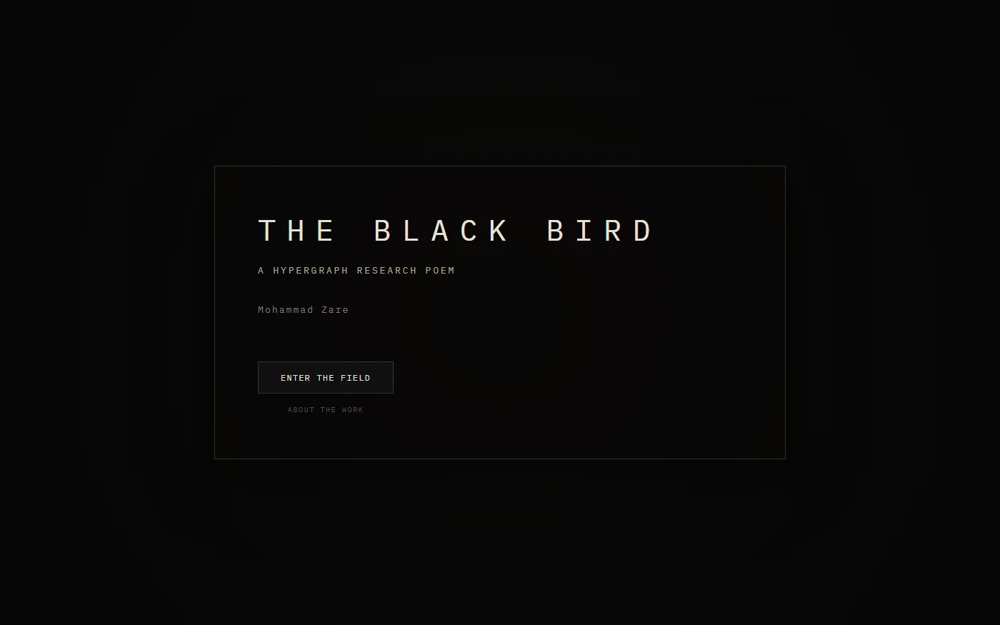
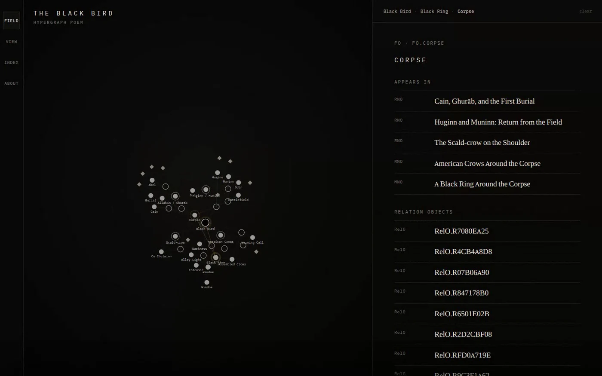

A hypergraph research poem · by Mozare · 2026
The Black Bird
A black bird appears beside a body. The scene does not remain singular. It draws other materials toward it, each carrying its own form and degree of support.

Primary surfaceCurrent public build · 5972b2b
Give one object textual duration.
Let movement remain partial.
SELECTED VIEWS
Three views
Three images hold distinct reading conditions without reducing the work to a single representative screen.

01
Threshold
Entry before the field becomes visible.
02
Mapping note
A local poetic surface remains linked to the wider relation field.

03
Relation field
Objects, names, sources, and relation bodies remain simultaneously addressable.
CONTEXT
A field that keeps its differences
The Black Bird gives each material a distinct working body. Research notes carry source-bearing prose. Mapping notes condense charged relations into local textual surfaces. Recurring things receive stable addresses, while names and citations preserve routes of return.
These distinctions let research and poetry remain in contact without asking one to borrow the authority of the other. The field makes contact spatial; the Reader gives one object time; Route records a partial movement through the work.
EDITION AND ACCESS
Work identity
A hypergraph research poem
Mozare
Mohammad Zare
Current public build · commit 5972b2b
English with source-language Name Objects
Graph field and linked reading chambers
Mohammad Zare. The Black Bird: A Hypergraph Research Poem. Born-digital web work, 2026.